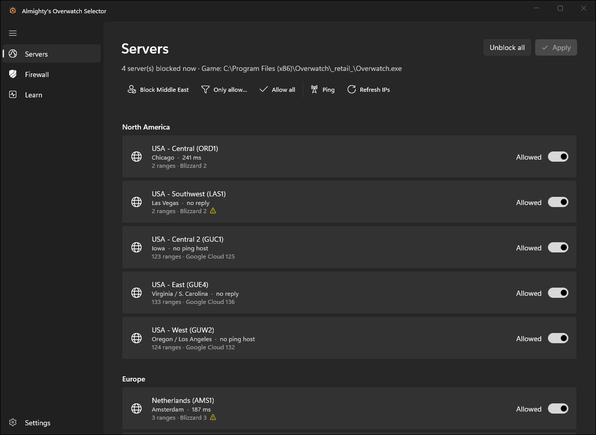

Pick your Overwatch servers
A free Windows app that blocks the regions you don't want, like the Middle East, so matchmaking puts you in the region you actually want to play in. No VPN, no game files touched.

Everything you need, nothing you don't
Built for players who keep landing in the wrong region, especially in South Africa, where Overwatch keeps matching you into the Middle East.
One-click region blocking
Block the Middle East, or allow only Europe, North America, Asia and more. Toggle individual servers like GMEC2, MES1 or AMS1.
Always-fresh server IPs
IP ranges come straight from Google Cloud's and AWS's published lists and Blizzard's own network, and refresh automatically every week.
Learn mode
Watches Overwatch's traffic during a match to detect the real server, and remembers new IPs so blocks stay tight when Blizzard moves servers.
Firewall cleanup
Finds every firewall rule that touches Overwatch, including leftovers from other tools such as dropship, and removes them safely.
Stays out of the way
A native Windows 11 app that sits in the system tray. Your blocks stay active even when the window is closed.
Clean and transparent
No telemetry, no accounts, no VPN. Rules are visible in Windows Firewall, and uninstalling removes all of them.
How it works
Overwatch can only match you on servers it can reach. Block a region and matchmaking picks the next best one.
- Install and openApprove the administrator prompt. The app needs it to manage Windows Firewall rules.
- Pick your regionsClick Block Middle East, or use Only allow… to keep just the region you want.
- Apply and playClick Apply and restart Overwatch. Check the server in-game with
Ctrl+Shift+N.
Playing from South Africa?
There's no Overwatch server in Africa, so matchmaking picks between Europe and the Middle East, and the Middle East usually wins on ping. If you'd rather play with European teammates and communities, block the Middle East and you'll be matched into Europe instead.
Example pings from one South African connection. Yours will differ.
| Server | Region | Ping |
|---|---|---|
| Saudi Arabia (GMEC2) | Middle East blocked | ~126 ms |
| Netherlands (AMS1) | Europe | ~188 ms |
| USA Central (ORD1) | North America | ~241 ms |
FAQ
Still unsure? These are the common questions.
Can I get banned for using this?
The app doesn't touch game files, memory or network packets. It only adds standard Windows Firewall rules, the same thing you could do by hand in Windows Defender Firewall. Players have blocked servers this way for years, but Blizzard hasn't officially endorsed it, so use it at your own risk.
Windows says "Windows protected your PC". Is it safe?
Brand-new apps show this SmartScreen warning until enough people have downloaded them. Click More info → Run anyway. You can check your download against SHA256SUMS.txt on the release page, and read every line of the source code on GitHub. Code signing through SignPath Foundation is on the way.
Does it work with the Steam version?
Yes. It finds Overwatch.exe for both Battle.net and Steam installs. If it can't, browse to it in Settings.
How do I undo it?
Click Unblock all in the app, or simply uninstall it. The uninstaller removes every firewall rule the app created.
I still got a blocked server. What now?
Click Refresh IPs, then Apply, and restart Overwatch. If it keeps happening, turn on Learn mode for a match and file a wrong server report. Those reports keep the IP lists accurate for everyone.
Does it work on console or Mac?
No. It works on Windows PCs only, because it relies on Windows Firewall.
Does it collect any data?
No. There's no telemetry or account. It downloads public IP range lists from Google, Amazon and RIPE, checks GitHub once a day for a newer version (you can turn that off), and pings game servers when you ask. See the privacy policy.